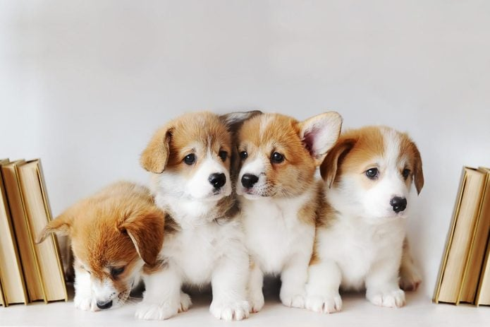

The sunflower is named from its massive, brilliant flowers, which mimic the sun in shape and appearance. It has a rough, hairy stem and huge, rough, coarsely toothed leaves. It can reach a height of 3 metres (10 feet), and the enormous flower heads may reach a diameter of 30 cm (11.81 inches). The flower head is made up of thousands of tiny blooms known as florets. The sunflower's centre, where the seeds develop, is covered with small blooms that bees like. The sterile florets are the outside petal-bearing florets, which might be yellow, red, orange, or various colours. The sunflower is distinguished by the fact that it rotates to face the sun, a process known as heliotropism.
Golden Hour refers to the period of daytime shortly after sunrise or before sunset, during which daylight is redder and softer than when the Sun is higher in the sky. This is considered one of the best times for photography due to the unique and beautiful lighting conditions it presents.
A puppy is a young domestic dog, typically less than a year old. They are known for their energetic behavior, adorable looks, and playful nature. Puppies require a lot of care including feeding, training, socializing, and frequent veterinary check-ups for vaccinations and overall health. They can bring a lot of joy and companionship to a home, and they eventually grow into adult dogs with their own unique personalities and behaviors.
Butterflies are brightly colored insects known for their remarkable lifecycle and striking patterns. They are a part of the Lepidoptera class, which also includes moths. With over 20,000 species globally, they come in all shapes and sizes, from a tiny 1/8 inch to a huge 12 inches.